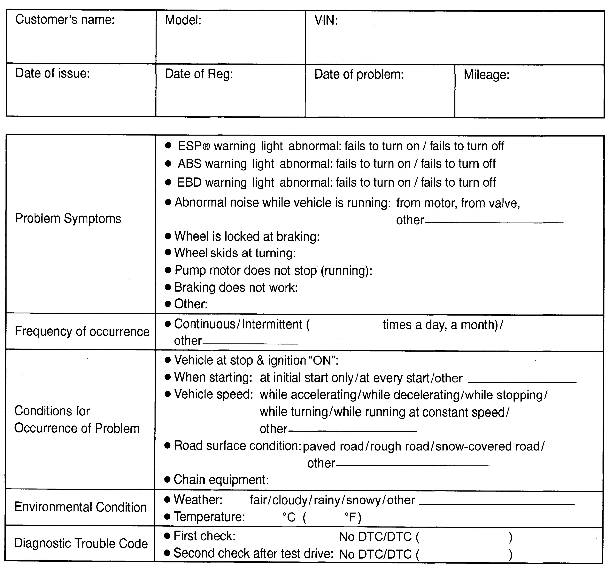

4F
| ESP® System Check |
Refer to the description after the following general flow for details of each step.
| Step | Action | Yes | No |
|---|---|---|---|
| 1 |
Malfunction analysis
1)Perform Customer complaint analysis.
2)Perform Problem symptom confirmation.
3)Perform DTC check, record and clearance and recheck DTC.
Is the same DTC detected again after performing DTC clearance?
|
Check and repair referring to applicable DTC troubleshooting, and then go to Step 6.
|
Go to Step 2.
|
| 2 |
Visual inspection
1)Perform Step 2: Visual Inspection.
Is there any faulty condition?
|
Repair or replace defective part, and then go to Step 6.
|
Go to Step 3.
|
| 3 |
Road test
1)Perform Step 3: Road Test.
Is malfunction detected?
|
Repair or replace defective part, and then go to Step 6.
|
Go to Step 4.
|
| 4 |
Brake diagnosis
1)Check and repair brake system.
Is malfunction detected?
|
Repair or replace defective part, and then go to Step 6.
|
Go to Step 5.
|
| 5 |
Intermittent problem check
1)Check for intermittent problems.
Is malfunction detected?
|
Repair or replace defective part, and then go to Step 6.
|
Go to Step 6.
|
| 6 |
Final confirmation test
1)Perform Step 6: Final Confirmation Test.
Is malfunction detected?
|
Go to Step 4.
|
End.
|
Step 1: Malfunction Analysis
Customer complaint analysis
Record details of the problem (failure, complaint) and how it occurred as described by the customer.
For this purpose, use of such a questionnaire form shown below will facilitate collecting information for proper analysis and diagnosis.
Customer questionnaire form (Example)

 "Expand image")
Problem symptom confirmation
If symptom in “Customer Questionnaire” is found or reproduced in the vehicle, check that the symptom is problem or not. (This step should be done with the customer if possible.) Check warning light related to brake system referring to “EBD Warning Light (Brake Warning Light) Check”, “ABS Warning Light Check” and “ESP® Warning Light Check” under Warning Light Check.
DTC check, record and clearance
Perform DTC Check procedure, record it and then clear it. 
Recheck DTC.
When DTC which is recorded at DTC check procedure is detected again after performing DTC clearance, go to DTC Check to perform the diagnosis.
When DTC which is recorded at DTC check procedure is not detected anymore after performing DTC clearance, ESP® control module does not perform the system diagnosis, or temporary abnormality may occur, therefore go to Step 3: Road Test to perform the diagnosis.
Step 2: Visual Inspection
As a preliminary step, perform visual check of the items that support proper function of the ESP® system.
Step 3: Road Test
Perform Road Test as follows to check if each warning lamp lights up.
1)Drive at 40 km/h (25 mph) for over two minutes.
2)Turn right and left at over 10 km/h (6 mph) for over a second by turning steering wheel over 45 degrees.
3)Drive at 60 km/h (37 mph) for over three seconds.
4)Stop the vehicle using foot brake from driving at 60 km/h (37 mph).
Step 4: Brake Diagnosis
Check the parts or system suspected as a possible cause referring to Brake System Description and based on symptoms appearing on the vehicle (symptoms observed through Step 1 – 3). Repair faulty parts or replace them, if necessary).
Step 5: Intermittent Problem Check
Check parts that are prone to cause intermittent trouble (e.g. wire harness, connector), referring to Intermittent Connection and Poor Contact Inspection and the related circuit of which DTC is recorded in Step 1 – 5.
Step 6: Final Confirmation Test
Check that the problem symptom is not observed any more and ESP® is free from any abnormal conditions. If what has been repaired is related to malfunction DTC, clear the DTC referring to DTC Clearance, perform road test and check that the DTC is not indicated.